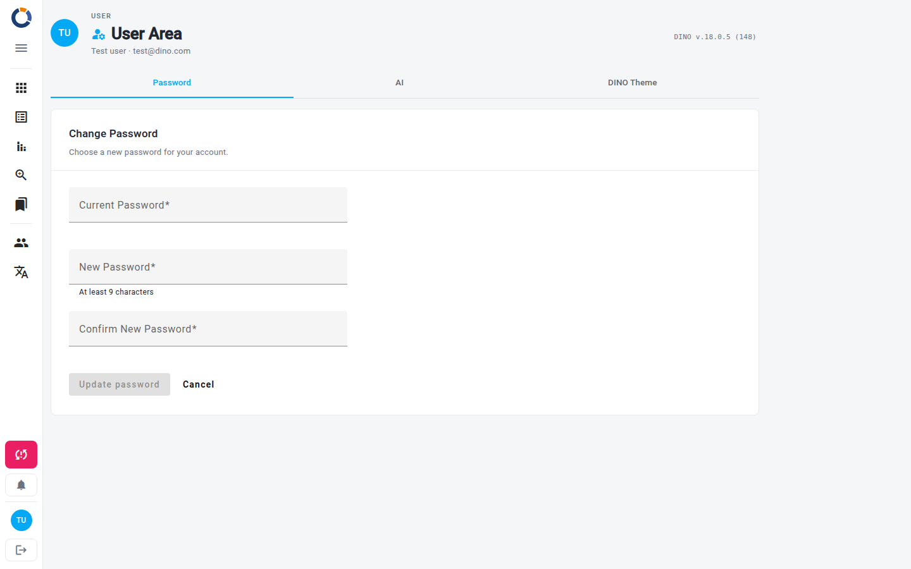

Область користувача
Область користувача — це ваша особиста сторінка облікового запису. Тут зібрано все, що належить саме вам, а не всій інсталяції Dino: дані для входу, ваш ключ і кредити DINO-AI, кольори, які Dino використовує для вас, резервне копіювання та відновлення даних, а також навчальний тур.
У заголовку сторінки показано ваші ініціали, повне ім'я та адресу електронної пошти, тож ви завжди можете переконатися, під яким обліковим записом увійшли. Версія Dino, яка працює зараз, показана у верхньому правому куті.

Область користувача організовано у вкладки. Вкладка, на якій ви перебуваєте, є частиною адреси сторінки, тож ви можете зберегти конкретну вкладку в закладках і повертатися до неї напряму. Перемикання між вкладками не змінює історію браузера — натискання кнопки «Назад» виводить з Області користувача, а не повертає до попередніх вкладок.
Зміна пароля
Вкладка Пароль — це місце, де ви оновлюєте пароль, який використовуєте для входу в Dino.
- У полі Поточний пароль введіть пароль, який використовуєте зараз.
- У полі Новий пароль введіть новий пароль. Він має містити щонайменше стільки символів, скільки зазначено під полем.
- У полі Підтвердити новий пароль введіть новий пароль ще раз.
- Виберіть Оновити пароль.
Якщо ви хочете почати спочатку, виберіть Скасувати, щоб очистити всі три поля. Якщо поточний пароль не збігається, Dino повідомить вам про це, і жодних змін не буде внесено.
Виберіть надійний пароль
Використовуйте пароль, який більше ніде не застосовується, і зберігайте його в менеджері паролів. Якщо ви забули поточний пароль і не можете увійти, дивіться Скидання пароля.
Ключ і кредити DINO-AI
Вкладка ШІ показує ключ DINO-AI, що належить вашому обліковому запису, разом із кількістю кредитів DINO-AI, які у вас залишилися.
- Виберіть Показати, щоб відкрити ключ, або Сховати, щоб знову його приховати.
- Виберіть Копіювати, щоб скопіювати ключ у буфер обміну.
- Якщо ваша інсталяція підтримує придбання кредитів, виберіть Додати ще, щоб поповнити їх.
Ключ видається вашому обліковому запису автоматично під час входу — тут нічого не потрібно вставляти. Якщо з вашим обліковим записом не пов'язано жодного ключа, вкладка повідомить про це.
Тема DINO
Вкладка Тема DINO керує кольорами, які Dino використовує для вас. Зміни кольорів застосовуються лише після збереження, тож ви можете вільно експериментувати; вибір світлої чи темної теми застосовується негайно.
- Виберіть поля Основний колір, Акцентний колір і Колір попередження та оберіть колір у палітрі.
- Використайте поле Назва набору, щоб назвати комбінацію, або виберіть наявну назву зі списку.
- Перемикайтеся між світлим і темним режимом за допомогою кнопок із сонцем і місяцем.
- Виберіть Зберегти тему, щоб застосувати свій вибір.
Панель Попередній перегляд показує, як виглядатимуть вибрані кольори, перш ніж ви їх застосуєте. Завантажити набір повертає збережену комбінацію, а Скинути скасовує ваші зміни та повертає тему, застосовану наразі.
Теми зберігаються в цьому браузері
Ваша тема та збережені набори зберігаються в браузері, яким ви користуєтеся. В іншому браузері чи на іншому пристрої Dino починає з теми за замовчуванням.
Резервне копіювання та відновлення
Вкладка Резервне копіювання та відновлення дає змогу завантажити повну копію ваших даних або завантажити її назад. Вона показується лише адміністраторам і лише тоді, коли резервне копіювання та відновлення увімкнено для вашої інсталяції.
Щоб створити резервну копію даних:
- Виберіть Завантажити резервну копію.
- Збережіть файл із назвою
dino_db_export.jsonу безпечному місці.
Щоб відновити дані:
- Виберіть Виберіть файл резервної копії та вкажіть файл
.json, експортований із Dino. - Підтвердьте відновлення, коли Dino запитає.
- Зачекайте, поки Dino відновить дані. До завершення процесу показується індикатор завантаження.
Відновлення перезаписує відповідні дані
Дані з файлу записуються до локальної бази даних на цьому пристрої: будь-який запис з тим самим ідентифікатором, що й імпортований, буде перезаписано. Створіть свіжу резервну копію перед відновленням і переконайтеся, що вибрано саме той файл, який вам потрібен.
Навчальні посібники
Вкладка Навчальні посібники показується лише тоді, коли для вашої інсталяції налаштовано навчальний тур, і містить одну дію. Виберіть Розпочати тур Dino, щоб запустити покрокове ознайомлення з основними можливостями Dino — корисне нагадування, якщо ви новачок на платформі або хочете повернутися до певної теми.